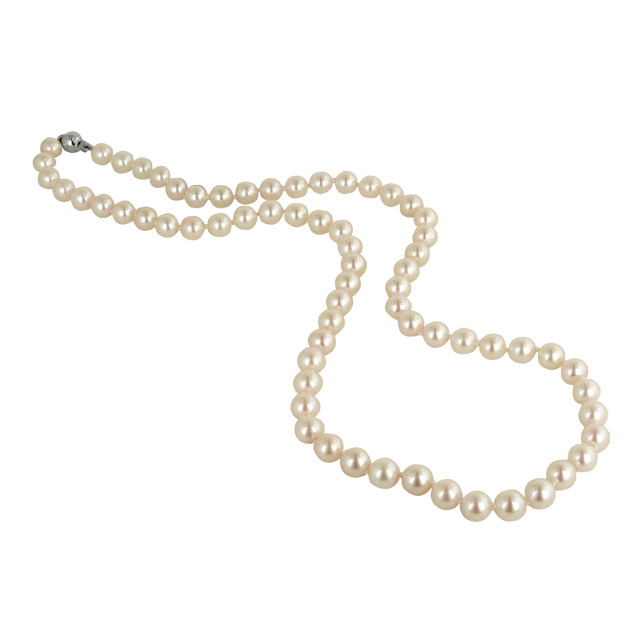
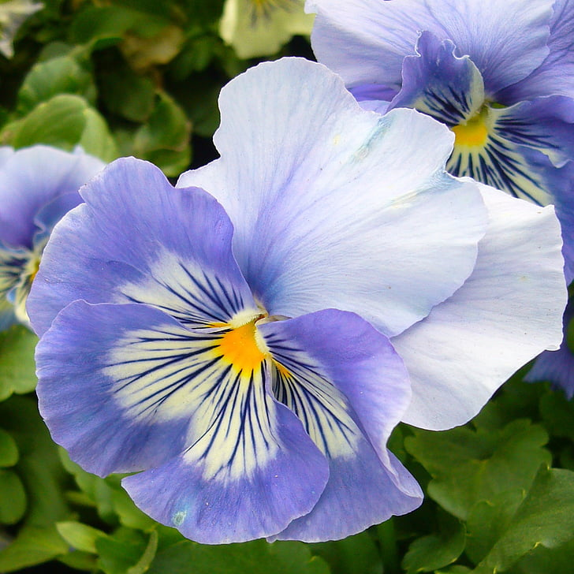

Hi, and welcome! I'm so glad you're here. My name is Greta, and I'm a proud sister of the Omicron chapter of Delta Delta Delta — known to most of us simply as Tri Delta — at Syracuse University. This site is a look inside our sisterhood: who we are, where we came from, and the cause we work hardest for. Whether you're a prospective member, a fellow Tri Delta from another chapter, or just curious about Greek life at Syracuse, I hope this gives you a real sense of what makes our chapter special.
Our Mission
Tri Delta was founded on a simple but powerful idea: that a sisterhood should be “kind alike to all” and value a woman's character over her outward appearance. More than a century later, that founding spirit still shapes everything we do. Our motto, translated from Greek, is “Let us steadfastly love one another,” and it's a promise we try to live out every day, both within our chapter and in the causes we support.
(Source: https://www.tridelta.org/our-story/history-and-archives/)
Our Values
Everything Tri Delta does is grounded in a shared set of values:
- Authenticity – being genuine with ourselves and each other
- Diversity – welcoming women of every background
- Leadership – stepping up on campus and beyond
- Scholarship – supporting each other academically
- Sisterhood – building friendships that last a lifetime
(Source: https://www.tamucc.edu/student-activities/fsl/panhellenic.php)
Quick Facts
- Founded: Thanksgiving Eve, November 27, 1888, at Boston University
- Colors: Silver, gold, and cerulean blue
- Symbol: Stars and crescent | Flower: Pansy | Jewel: Pearl | Mascot: Dolphin
- National philanthropy: St. Jude Children's Research Hospital
- Today: 141 collegiate chapters and more than 300,000 lifetime members across the U.S. and Canada
Take a look around — the History page traces our story from a dorm room in Boston to our chapter here at Syracuse, and the Philanthropy page shares why St. Jude means so much to us. And don't forget to scroll through the photo gallery below to see some of our favorite sisterhood moments!
Photo Gallery

